    <nav>
      <ul id="gnav">
        <li class="gnav-item item1"><a href="./index.html">日常のオトモ</a></li>
        <li class="gnav-item item2"></li>
        <li class="gnav-item item3">
          <a href="#"></a>
        </li>
        <li class="gnav-item item4">
          <a href="#"></a>
        </li>
      </ul>
    </nav>